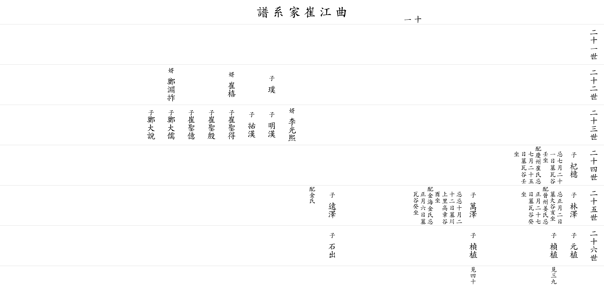

| 곡 강 최 가 계 보 |
| 이전☜ 쪽 11 ☞다음 |
| 21세 | ||||||||||
| 22세 |
▲ 박 璞 |
아버지 △진방(鎭邦) 의 넷째 아들 |
||||||||
| 23세 |
명한 明漢 △ |
우한 祐漢 △ |
||||||||
| 24세 |
▲ 기억 杞檍 |
아버지 △주한(冑漢)의 셋째 아들 제삿날 7월21일 묘 와곡에 남동향(壬坐)으로 있었으나 1996년 흥해읍 덕장리 산75로 이장, 아버지 묘 아래 남동향(亥坐)으로 상석이 있다. 할머니 경주최씨 제삿날 7월25일 묘 와곡에 남동향(壬坐)으로 있었으나 할아버지와 함께 이장(合窆) |
||||||||
| 25세 |
임택 林澤 |
제삿날 1월 2일 묘 흥해읍 대련1리 동남향(亥坐) 할머니 진주강씨 제삿날 1월27일 묘 와곡 남서향(癸坐) |
만택 萬澤 |
제삿날 10월22일 묘 흥해읍 천상리 고장곡 정동향(酉坐) 할머니 김해김씨 제삿날 1월 6일 묘 와곡 남남서향(癸坐) |
원택 遠澤 |
미상 | ||||
| 26세 |
원식 元植 △ |
정식 楨植 ▼ |
춘식 春植 ▼ |
석출 石出 △ |
||||||
| 이전☜ 쪽 11 ☞다음 |
|  |